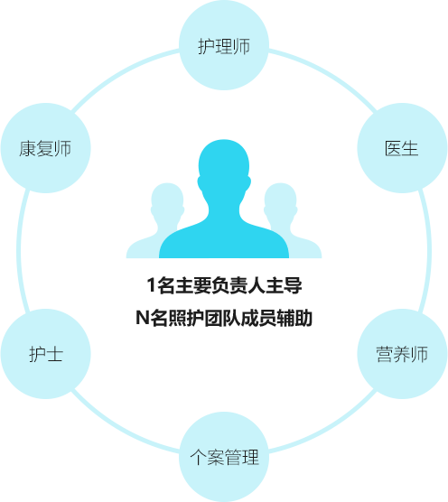

- 首页
- 全国连锁
400-059-5522
高品质康复专科连锁
泰康国际标准康复体系
专业护理服务
专业失智照护
泰康养老社区坚持医养结合模式，社区配建康复医院，汇集国内外康复医学专家，由资深康复医师、物理治疗师、作业治疗师、言语治疗师、文娱治疗师、临床营养师、中医医 师、心理治疗师、康复护师、康复顾问等组建多学科康复医疗团队，为患者提供集诊疗、康复、护理为一体的国际化康复医疗服务。医院配备先进的康复治疗设备、设施，及国 内康复医院少有的日常生活能力（ADL）训练区，例如厨房、卧室、餐厅等居家场景。
健康档案
定期体检
咨询顾问
康复医院
精尖技术
悉心照护
24小时紧急呼叫
30分钟急救
30分钟转诊
双向转诊
远程医疗
专家会诊
顶级专家
顶级机构
精准治疗
国际转诊绿色通道
境外高端医疗资源
组建专业急诊急救团队，一旦长者出现急救状况，医院自身具备强大的急救处置能力，亦可即刻对接大型综合医院。
对长者的生活方式、饮食及医疗保 健习惯进行全面全程干预。
通过专业的康复手段，介入到护理过程中，尽可能延缓人体功能衰老，提升长者生活状态及生活质量。
泰康新型医养社区，以长期健康管理为目标，建立起了“预防保健—疾病治疗—慢病康复—老年护理”闭环整合型医疗保健体系，为社区老人提供全方位、持续性的医疗健康服 务，实现“医”和“养”的高度融合，为养老难题提供了一个新的解决方案。
专注成为您的健康生活管家，打造健 康七度空间
由神经专科医师、康复医师、物理治 疗师、作业治疗室、言语治疗师、文 娱治疗师、康复护士、临床营养师、 心理医师以及康复顾问等组成多学科 团队，为每一位患者制定个性化的康 复治疗方案，开展家庭会议，家属也 成为康复团队的一员，并根据康复计 划的执行情况，定期调整康复计划， 以确保治疗顺利实施，并达到最优的 康复效果。
配有先进的监护与抢救设备，具备IC U工作经验的医护团队提供24小时全 天候的照护，为重症患者提供早期康 复机会。
多学科康复团队成员分别对患者的功 能状态进行专业系统的评估，共同制 定个性化康复治疗方案，并完成针对 性的康复治疗。
整体环境
门诊
病房
康复医学中心
健康管理中心
泰康之家引入国际照护服务技术标准体系，对标国际优秀长期照护机构，形成了泰康特色的照护服务及评估体系。遵循入住前专业评估、照护需求分级、设定照护目标、
制定照护计划的国际标准流程，为失能、半失能以及失智长者提供兼顾生活照料及医疗护理的整合照护服务，实现一站式生活健康解决方案。
需要疾病专业护理的人群，如老年慢性病、脑卒中、帕金森、术后康复治疗者
需要管路专业护理的人群，如鼻胃管、尿管、人工造口等
阿尔茨海默综合症、痴呆等认知障碍老人
失能护理人群，如长期卧床者、尿失禁、留置导尿管、疾病期间需用药结果观察、衰弱症及肌少症患者、需长期提供肠内营养患者等
泰康之家创新“1+N照护模式”，即1 名主要负责人主导，N 名照护团队成员 辅助。 这种模式不仅能保障居民得到全面专业的照护服务，更节省了公共资源 及家庭开销，同时也将家人从劳累的护理工作中释放，更好的投入事业与情感 交流之中。
康复医院以老年医学、康复医学和重症急救医学为优势学科，多学科医疗团队 为居民提供慢病管理、老年综合症及并发症预防、老年急救、康复治疗等全方 位医疗服务。
照护团队成员具有护理专业教育背景，临床护理经验丰富,充满活力和热情，通过专业的培训和科学的管理，为居民提供优质的护理服务。
多学科团队进行科学的评估，充分了解护理需求，根据综合评估结果从康复、营 养、慢病管理等方面，为居民定制个性化的照护方案。
引入数十项适老设施及医疗专业设施，融入现代化智能科技，打造安全、高效、人性化的居住环境。
消除焦虑、建立安全感、重拾生活乐趣、找到生命价值
改善认知能力、延缓记忆衰退进程、保持身体健 康活跃
解决子女对长者照顾的担忧和困扰，提高家庭幸 福感
专业健脑游戏，用刺激、挑 战等方式，保持大脑活跃、 改善认真能力。
每周设常规锻炼计划，特别 安排记忆障碍专属健身活动。
三餐营养师精心安排膳食， 并额外补充特需营养加餐。
每日不同主题康娱活动，特 别营造居民专属记忆场景。
常规近60项适老设施，还特 别设计符合记忆障碍居民需 求的专属环境设施。